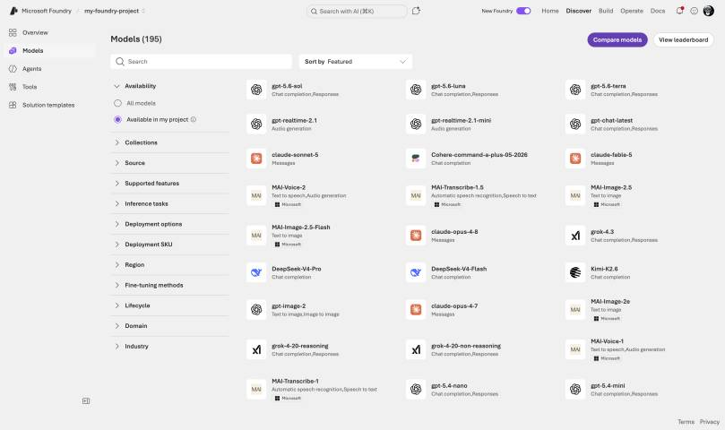
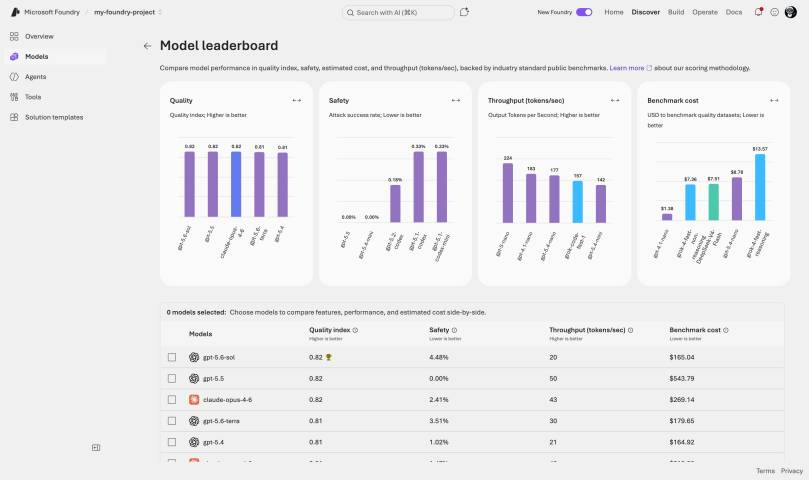
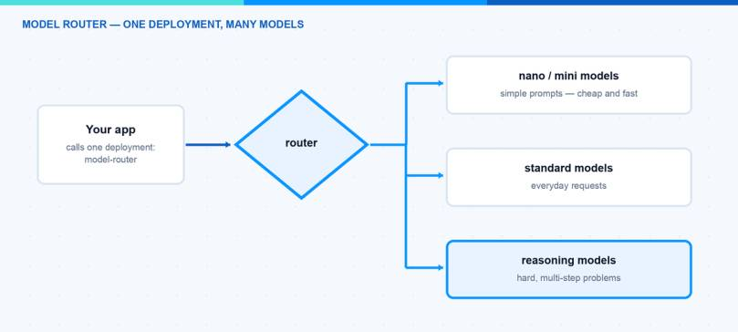
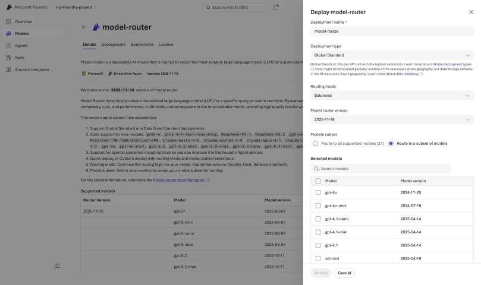
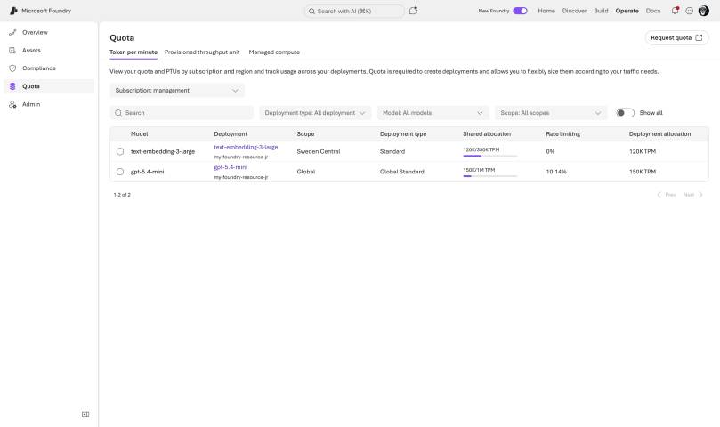
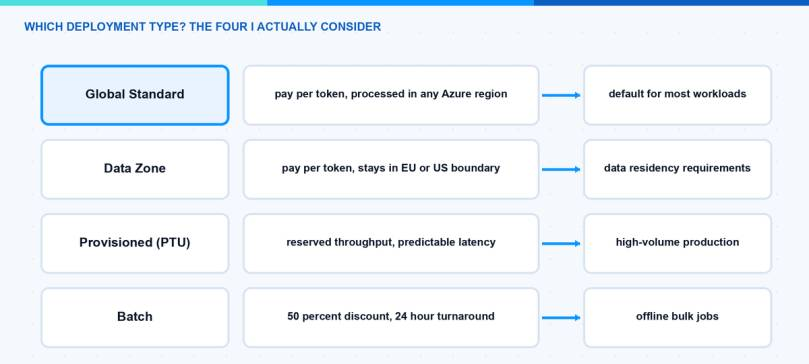

Picking a model used to be a one-time decision: you chose GPT-4o, put it in the config and moved on. In 2026 the model catalog in Microsoft Foundry lists more than 1,900 models across OpenAI, Anthropic, xAI, DeepSeek, Meta and Mistral — and the honest answer to “which model?” is usually “it depends on the prompt”. That is exactly the problem the model router solves. In this blog post I explain what the catalog looks like today, how the Foundry model router works, which knobs you have to control it, what it costs, and how I decide between router and fixed model. I already wrote a general take in AI models in 2026: what I would actually pick — this post is the Foundry-specific deep dive.
What Is Actually in the Model Catalog?
The catalog lives in the Foundry portal at https://ai.azure.com. Click on Discover in the upper navigation, then Models in the left pane. You get a search box and filters for Collection (the provider), Industry, Capabilities (reasoning, tool calling) and Inference task. Each model card has tabs for Quick facts, Details, Benchmarks, Deployments and License.

One thing about the numbers, because they confuse people: Microsoft documents “more than 1,900 models” for the whole catalog. When you open the catalog in a concrete project you see far fewer — my region view currently shows about 195 deployable models, and the Foundry extension in VS Code lists 271 because it also counts the local models from Foundry Local. All three numbers are “correct”; they just count different things.
The catalog has two top-level categories, and the difference is contractual, not technical:
- Models sold directly by Azure: hosted and operated by Microsoft, billed through your Azure subscription, covered by Microsoft support and SLAs. This includes all Azure OpenAI models — newest are the GPT-5.6 models (
gpt-5.6-sol,gpt-5.6-terra,gpt-5.6-luna, released July 2026 with a 1,050,000-token context window) — plus selected models from xAI (Grok), DeepSeek, Meta, Mistral AI, Cohere, Black Forest Labs and Microsoft’s own Phi and MAI families. - Models from partners and community: the majority of the catalog, offered under the provider’s terms and billed through the Azure Marketplace. Anthropic lives here. Claude reached general availability in Foundry in July 2026 — Claude Opus 4.8, Claude Sonnet 5 and Claude Haiku 4.5, in two hosting variants (“hosted on Azure” and “hosted on Anthropic infrastructure”) and billed in Claude Consumption Units (CCU) through a single Marketplace meter at $0.01 per CCU.
Hint: Claude in Foundry is not called through the OpenAI-compatible API but through the native Anthropic Messages API on your Foundry endpoint (/anthropic/v1/messages). Plan that into your client code — the payload format is different.
Models also disappear. gpt-4.1-mini, for example, is already marked as deprecated: existing deployments keep working, but the portal blocks new ones. Check the retirement date before you standardize a team on a model — the GA lifecycle gives you 18 months from launch, not from your go-live.
For comparing models before you commit, the portal has model leaderboards (still preview): a quality index, safety benchmarks, measured latency and throughput, and — refreshingly honest — the actual dollar cost it took to run the quality benchmark suite against each model. I use them to build a shortlist, then evaluate the shortlist on my own data. Leaderboards rank averages; your workload is not average.

What Is the Model Router?
The model router is a deployable model in Foundry (publisher Microsoft) that does not answer prompts itself. It is a small, trained routing model: it analyzes each incoming request in real time — complexity, reasoning needs, task type — and forwards the request to the most suitable underlying LLM. It does not store your prompts, and it only routes to models that match your access and your data-zone boundary.
Your application only sees one deployment:
# pip install openai>=1.75.0 — you call one deployment, the router picks the model per request
from openai import AzureOpenAI
client = AzureOpenAI(
azure_endpoint="https://<your-resource>.openai.azure.com/",
api_key="<your-api-key>",
api_version="2024-10-21")
response = client.chat.completions.create(
model="model-router", # your router deployment name
messages=[{"role": "user", "content": "Summarize this incident report."}])
print(response.choices[0].message.content)
print(response.model) # which model actually answered, e.g. gpt-5-mini-2025-08-07
The model field in the response always discloses which model answered. Log it — it is your most important observability signal when you work with the router.

As of mid-2026 the routing pool contains roughly 27 models. The core is the OpenAI lineup: the GPT-4o and GPT-4.1 families, o4-mini, and the GPT-5 line up to gpt-5.5 including the chat variants. On top of that, non-OpenAI models can join the pool: DeepSeek V3.1/V3.2, gpt-oss-120b, Llama-4-Maverick, Grok 4 and several Claude models (Haiku 4.5, Sonnet 4.5, Opus 4.1 through 4.7). Two status details that are easy to get wrong: router support for every non-OpenAI model is still in preview, and the brand-new GPT-5.6 models are not in the pool yet.
Note: Claude models are the only ones you must deploy separately from the catalog first; the router then invokes your Claude deployments when it selects them. Everything else in the pool works without a dedicated deployment. And watch the SKU: your Claude deployment type has to match the router deployment, otherwise the deployment fails with an InvalidResourceProperties error.
Which Version Am I Actually Running?
The router uses date-stamped versions, and the lifecycle is unusual: the current version 2025-11-18 is updated in place. New underlying models and features are added over time without a new version number, while the older versions (2025-08-07, 2025-05-19) are frozen. So “which models can my router use” is a moving target even on a pinned version — the supported-models table in the docs is the change log to watch.
There is also an auto-update option at deployment time. Convenient, but when a new router version rolls out, the set of underlying models changes with it — and with it, potentially, your quality profile and your costs. For production I pin the version and control the model set through a subset (next section).
How Do I Control the Routing?
You find the router by searching for model-router under Discover → Models. Click on Deploy and choose Custom settings — this is where the three knobs live. (Default settings deploys Balanced mode routing across the full model set.)

1. Routing mode — the cost-quality trade-off
- Balanced (default): considers all models within a small quality band (roughly 1 to 2 percent of the best model for that prompt) and picks the most cost-effective one.
- Cost: widens the quality band to about 5 to 6 percent and optimizes harder for price. For high-volume, budget-sensitive workloads.
- Quality: always the highest-quality model, cost ignored. For legal review, medical summaries, complex reasoning.
2. Model subset — the compliance gate
Select Route to a subset of models and tick the models the router may use. This solves three real problems. First, governance: newly added base models are not included until you explicitly add them, so the router cannot silently start using a model your data protection officer never saw. Second, context: the effective context window of a router deployment is the smallest window in the pool — with a subset you raise that floor. Third, if your organization governs model deployments with Azure Policy, the same built-in policy applies to the router’s subset.
Note: Changes to the routing mode or the subset can take up to five minutes to take effect. Do not panic when the first test after a change still routes like before.
3. Automatic failover
The router includes built-in failover: when the selected model has a transient problem, the request is transparently redirected to the next most appropriate model. On a default deployment this is enabled out of the box, no configuration.
Hint: Subset and failover are coupled. Your model subset is your fallback set — failover never leaves it, which is exactly what you want for compliance. But that also means: a subset with only one model has no failover at all. Always put at least two models in a subset.
What Does the Router Cost?
Billing is the sum of the underlying models’ token prices — you pay gpt-5-nano prices when the router picked gpt-5-nano — plus the router’s own charge on input tokens (the exact rate is on the model router pricing page). Whether the router saves money depends entirely on your traffic mix: if most prompts are simple and you were paying frontier prices for them, savings are dramatic. If your traffic is uniformly hard, a fixed model without the markup is cheaper. Measure it — Microsoft ships an auto evaluation toolkit for exactly this comparison; the docs recommend at least 100 prompts from your real workload.
Two more cost details. Prompt caching passes through, but a cache hit needs consecutive requests on the same underlying model — with dynamic routing that is not guaranteed, so do not budget with cached prices. And the router has its own quota, scaling with your subscription’s quota tier: from 1 million tokens per minute on Tier 1 up to 15 million on Tier 6 for Global Standard (Data Zone limits are lower). You see and assign this under Operate → Quota like for any other deployment.

Which Deployment Type Do I Choose?
Every model deployment needs a type, and this choice decides cost, latency and data path:

| Type | Processing location | Billing |
|---|---|---|
| Global Standard | Any Azure region | Pay per token, highest quota |
| Data Zone Standard | Within the US, EU or APAC zone | Pay per token, small premium |
| Regional Standard | Deployment region only | Pay per token, lowest quota |
| Provisioned (PTU) | Global, Data Zone or Regional | Reserved capacity, paid even when idle |
| Batch | Global or Data Zone | 50 percent discount, 24h target, not interactive |
For EU customers the Data Zone option is often the deciding factor: processing stays within the EU Data Boundary regions (France, Germany, Italy, Netherlands, Norway, Poland, Spain, Sweden, Switzerland). Data at rest always stays in your resource’s geography — the type only governs where inference runs. Also worth knowing: priority processing (preview), a premium pay-as-you-go option on Global and Data Zone Standard with a defined latency target — a middle ground between best-effort Standard and PTU.
Note: This table is about normal model deployments. The model router itself only supports Global Standard and Data Zone Standard, and the resource must be in East US 2 or Sweden Central today. If you need PTU capacity or batch pricing, you deploy that model directly. The good part: a Data Zone router honors the data zone boundary in its routing decisions, so it only routes to models inside the boundary.
The feature that glues Standard and Provisioned together is spillover: when your PTU deployment returns a 429 because capacity is full, requests route to a paired standard deployment in the same Foundry resource — for all traffic, or per request via the x-ms-spillover-deployment header. PTU covers the base load at fixed cost, spillover catches the peaks at token prices.
How Do I Pick Models for Agents?
An agent in Foundry Agent Service is configuration: instructions plus model plus tools. Two patterns work well for me:
- Router as the agent’s base model. In a multi-step agent, the steps differ wildly in difficulty — intent classification is trivial, root-cause analysis is not. Select your router deployment in the agent’s model dropdown, and each step gets a fitting model automatically. Caveat from the docs: if the agent uses Agent Service tools in its flows, only OpenAI models are used for routing.
- The hybrid pattern. Router for the general traffic, plus a pinned dedicated deployment where compliance or reproducibility demands a fixed model version. Routers for breadth, pins for the crown jewels.
How Do I See What the Router Is Doing?
Three things I set up on day one:
- Log the
modelfield of every response. After two weeks you have the routing distribution — the single most useful chart for the pin-or-route decision. - Azure Monitor and Cost analysis in the Azure portal. Under Monitoring → Metrics you can split the router’s metrics by underlying model; under Cost analysis you filter by the Deployment tag and see where the money actually goes.
- A/B the router against your old fixed model with your own evaluation set before switching production traffic. The auto evaluation toolkit automates most of this.
The Approach I Actually Use
- New workload? Start with model router, balanced mode, and log the
modelfield from day one. - After two weeks, look at the routing distribution. If 90 percent lands on one model anyway, pin that model and save the markup.
- Compliance workload? Model subset with only the approved models (minimum two, so failover keeps working) — or a pinned deployment in a Data Zone.
- Volume grows predictable? PTU for the base load, spillover for peaks — with directly deployed models, since the router does not support PTU.
- Re-evaluate quarterly. The catalog moves monthly.
Pitfalls I Now Avoid
- Large-context calls against the router. A bigger call does not always fail — it fails exactly when the router picks a small model, so you get intermittent errors that look random. Raise the floor with a subset, or summarize and truncate before sending.
- Trusting the router blindly with sampling parameters. When an o-series reasoning model is selected, parameters like
temperature,top_p,stopand the penalty settings are dropped silently. If your app depends on them, pin a non-reasoning model.reasoning_efforton the other hand is passed through since version 2025-11-18. - Single-model subsets. No second model means no failover. Two minimum.
- Auto-update on production routers. New version, new model pool, new cost profile — without a deliberate decision. Pin and update consciously.
- Assuming multimodal parity. Image input works (the routing decision is made on the text only), audio input does not — the router is a text-first feature.
- Comparing router cost to list prices only. The charge on input tokens is real, and prompt caching discounts are unreliable under dynamic routing. Whether the router wins depends on your traffic mix, not on the marketing slide.
Where This Is Heading
Model selection is turning from an architecture decision into a runtime decision. The catalog will keep growing, and routing will get smarter as the preview models graduate to GA. I expect the pinned-single-model setup to become the exception, reserved for regulated workloads. The pragmatic path today: let the router handle breadth, keep a small set of pinned deployments where control matters, and check the model router docs quarterly because this feature moves fast. And if you want to run small models completely offline instead, that is a different story — I wrote it up in Foundry Local on the Mac.
I hope this makes the model jungle a bit easier to navigate.
Stay healthy,
Cheers Jannik